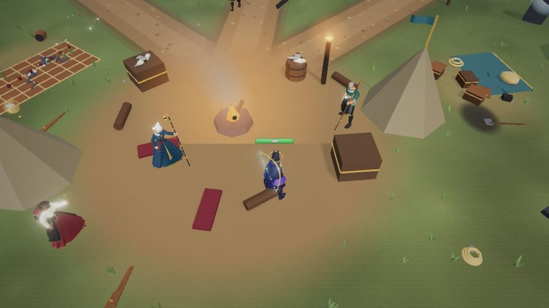
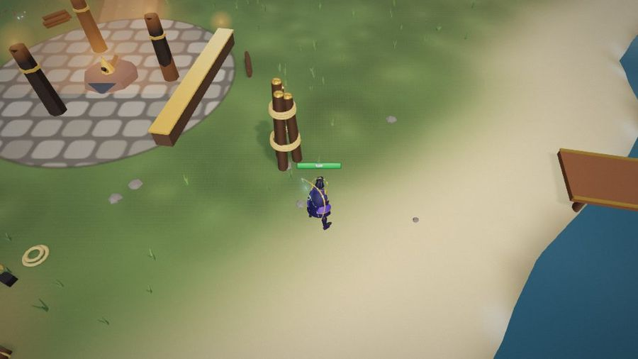
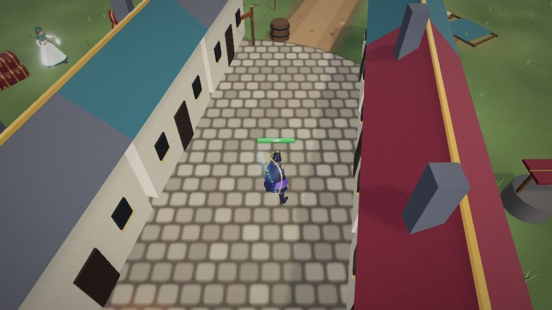
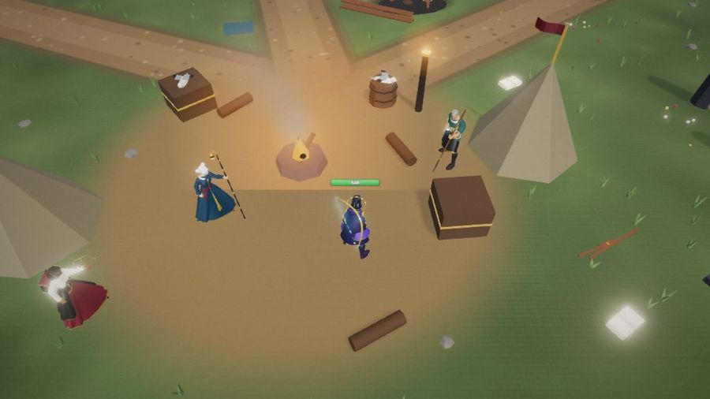
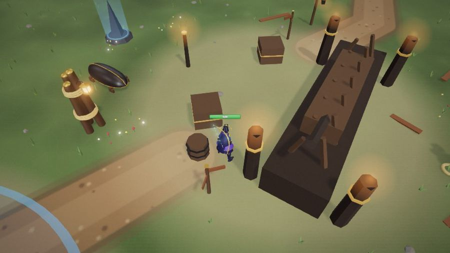
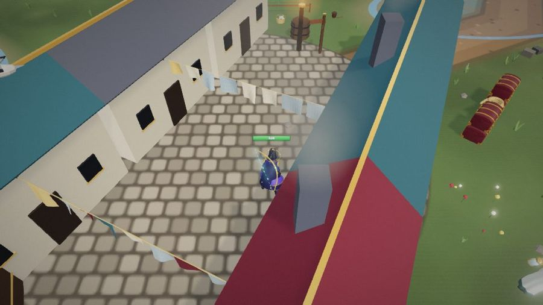
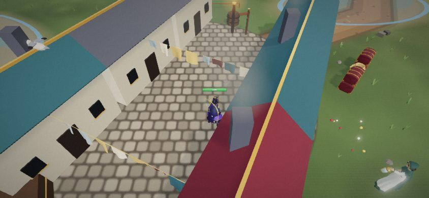
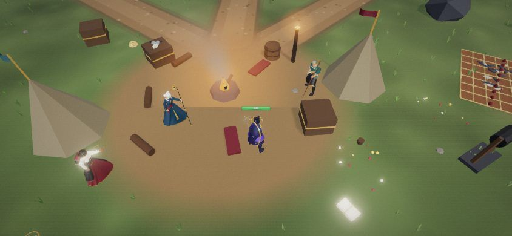

The Sea, alive
The Climb, chapter I (floors 1 to 10). 2026-11-16. Your ask: "look at the map and fill it more, to be more lively". This is the first chapter only; the other four wait for your look.
What is new on the Sea floors
- Gulls. They sit on the lighthouse's gallery, the wrecks, the cottages' ridges, rocks, crates, the stake nets, the sand, the tidal flats and the water. When you walk up they lift off, wheel over you and come down again a little way off. They leave the flats when the tide turns, and a fight nearby scares them up. Wherever you go on a floor, some come over.
- Smoke from the camp fire, the beacons, about half the cottages' chimneys and the cooking fires past the edge.
- Cloth in the wind: washing strung across the village lanes (high over your head), pennants on the tents, on the lighthouse's top and on poles in the water, nets drying on stakes in the shallows, sails on the boats.
- On the water: rowing boats moored at the jetties and fishing boats under sail standing off the shore, all rocking on the swell; rings spreading in the shallows, and now and then a fish leaping.
- People walking beside the paths between places, away from the packs (on a computer only). They stop when you are in their way and turn back from a fight. A stand-in figure for now: see the choices below.
- Small things on the ground at the places' edges and on the sand: coils of rope, baskets of fish, glass floats, oars, buckets, folded sails, driftwood. All ankle-high and off the paths, so nothing you walk through looks wrong.
Everything follows each floor's own layout (its places, paths, cover and spots), so a floor moved or made again keeps its life where it fits. None of it is in a fight: no walls, no enemies, nothing the path finding sees, and the fights play exactly as before (checked: the same fight to the last number, life on or off).
Clips
Real game time, the game's own camera. Pictures can't show what moves, so these matter most.
Before and after
The same view, the same moment, life off (left) and on (right). Four of the ten floors.
Floor 1, the Drowned Harbour: the camp


Floor 1: the east shore


Floor 1: the village lane


Floor 3, Gull Point: the camp


Floor 3: the shipyard


Floor 5, Wreckers’ Cove: the village


Floor 5: the beacon
Floor 8, the Anchorage: the camp


Floor 8: the beacon
On a phone
Phones get a lighter set: 20 gulls instead of 44, no walking people, no leaping fish, fewer rings and boats. Smoke, cloth and the small things stay (they cost almost nothing).


What it costs
The game's own speed tool (pipeline/tools/perf.py), the hero set down beside one pack after another for 25 s. Life off
and life on in turns, two of each (the computer was busy with other agents, so each number has a few tenths of noise on a computer and
several milliseconds on the slowed phone). The middle frame, in milliseconds:
| Life off | Life on | Without the walking people | Draw calls | |
|---|---|---|---|---|
| Computer, floor 1 | 9.6 / 9.9 | 10.0 / 9.9 | 9.7 / 10.4 | 243 → 273 |
| Computer, floor 5 | 9.6 / 10.3 | 11.3 / 11.0 | 10.1 / 10.4 | 244 → 262 |
| Phone (a computer slowed four times), floor 1 | 26.3 / 32.0 | 39.0 / 34.4 | (no people on a phone) | 249 → 266 |
| Phone (slowed four times), floor 5 | 30.7 / 29.7 | 36.8 / 32.1 | 247 → 263 |
- Computer: about 0.3 ms on floor 1 and about 1 ms on floor 5, most of it the walking people (three skinned figures). Sure of this within a few tenths.
- Phone: somewhere between 2 and 5 ms of about 30 (the second pair, measured when the computer was quieter, says about 2.5). Sure of the direction, not of the size: the slowed processor is the limit there and each extra draw costs it. If that is too much, the boats can become one draw instead of six and the small things fewer, which would take about half of it back.
- The fights are the same fights: every run, life on or off, printed the same fight (floor 1
98b0044a, floor 5635120e1).
Your choices
src/tower/world/land.ts, which I may not touch. To let their sails move and their chimneys smoke, and to keep my
moored boats off its boats for sure, land.ts would only need to leave what it drew where the life can read it:
into.userData.landLife = { homes, boats: drawn, jetties } before its return (homes with each chimney's top:
{ x, z, top: y + h + w * 0.42 + 1.2 }). Today the life works out the jetties from the outline the same way land.ts does.How it is built
- A layer of its own,
src/tower/world/life/:core.ts(birds, smoke, cloth, water, floating boats, the ground they keep off),sea.ts(the Sea's),walkers.ts(people),index.ts. No floor's file changed. - The hook: three lines in
src/tower/world/world.ts, where the floor's people and scenery are made, updated and put away; the life is made, updated and put away beside them. - Each kind of thing is one draw for all of them, moved on the graphics card; no shadows. It rolls its own dice, so the fights stay the same fights.
- Switches:
?life=0in the address turns it off;?life=liteshows the phone's set on a computer.